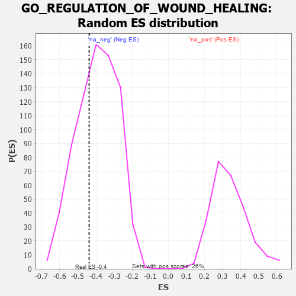

| | | Dataset | 7d |
| Phenotype | NoPhenotypeAvailable |
| Upregulated in class | na_neg |
| GeneSet | GO_REGULATION_OF_WOUND_HEALING |
| Enrichment Score (ES) | -0.4373875 |
| Normalized Enrichment Score (NES) | -1.1115143 |
| Nominal p-value | 0.3401084 |
| FDR q-value | 0.7345102 |
| FWER p-Value | 1.0 |
Table: GSEA Results Summary
 Fig 1: Enrichment plot: GO_REGULATION_OF_WOUND_HEALING
Fig 1: Enrichment plot: GO_REGULATION_OF_WOUND_HEALING
Profile of the Running ES Score & Positions of GeneSet Members on the Rank Ordered List
| PROBE | GENE SYMBOL | GENE_TITLE | RANK IN GENE LIST | RANK METRIC SCORE | RUNNING ES | CORE ENRICHMENT | | 1 | SYK | | | 2186 | 0.278 | -0.2350 | No |
| 2 | ANO6 | | | 2339 | 0.255 | -0.2175 | No |
| 3 | WNT4 | | | 3023 | 0.146 | -0.2825 | No |
| 4 | PROS1 | | | 3070 | 0.141 | -0.2681 | No |
| 5 | RREB1 | | | 3099 | 0.137 | -0.2519 | No |
| 6 | SMAD3 | | | 3303 | 0.105 | -0.2624 | No |
| 7 | MTOR | | | 4114 | -0.025 | -0.3608 | No |
| 8 | CRK | | | 4139 | -0.031 | -0.3593 | No |
| 9 | USF1 | | | 4296 | -0.059 | -0.3704 | No |
| 10 | CD109 | | | 4325 | -0.064 | -0.3648 | No |
| 11 | ADTRP | | | 4612 | -0.120 | -0.3835 | No |
| 12 | MYLK | | | 4651 | -0.128 | -0.3699 | No |
| 13 | ENPP4 | | | 5189 | -0.245 | -0.4022 | Yes |
| 14 | PTEN | | | 5262 | -0.261 | -0.3738 | Yes |
| 15 | CD9 | | | 5319 | -0.277 | -0.3411 | Yes |
| 16 | XBP1 | | | 6011 | -0.475 | -0.3598 | Yes |
| 17 | SYTL4 | | | 6304 | -0.578 | -0.3136 | Yes |
| 18 | KANK1 | | | 6536 | -0.678 | -0.2453 | Yes |
| 19 | KLKB1 | | | 7216 | -1.090 | -0.1744 | Yes |
| 20 | PLPP3 | | | 7740 | -1.876 | 0.0290 | Yes |
Table: GSEA details [plain text format]

Fig 2: GO_REGULATION_OF_WOUND_HEALING: Random ES distribution
Gene set null distribution of ES for GO_REGULATION_OF_WOUND_HEALING